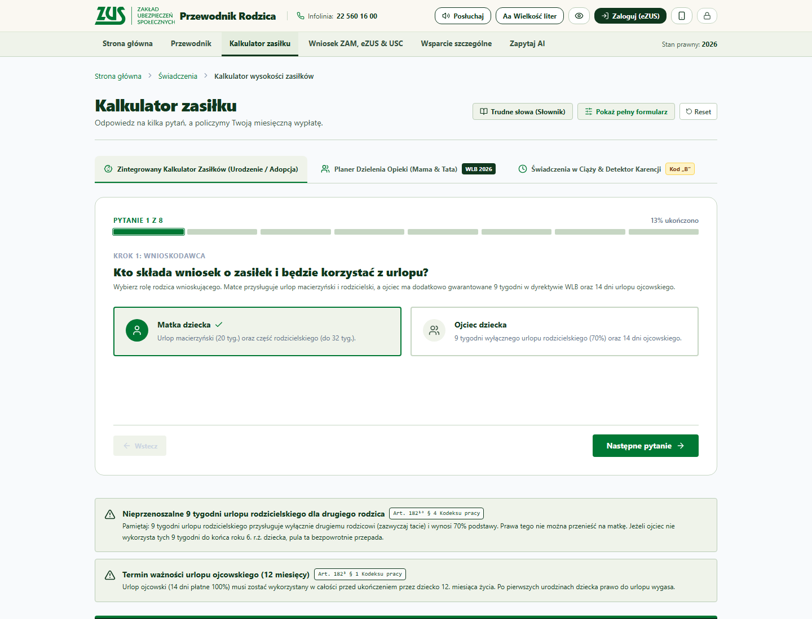

przewodnik-rodzica.zus.pl/
przewodnik-rodzica.zus.pl/przewodnik
przewodnik-rodzica.zus.pl/kalkulator

przewodnik-rodzica.zus.pl/e-uslugi
przewodnik-rodzica.zus.pl/trudne-sytuacje
przewodnik-rodzica.zus.pl/asystent-ai
przewodnik-rodzica.zus.pl/jury-sandbox
przewodnik-rodzica.zus.pl/admin